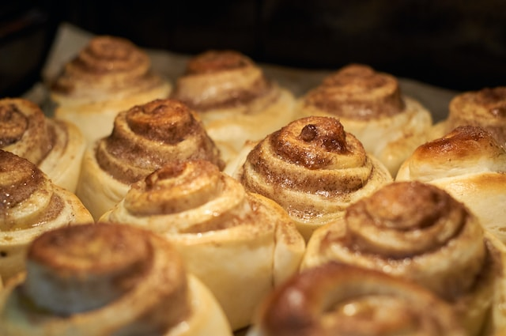

Ingredients
Let's Cook
- ¼ cup warm water (100 degrees F/38 degrees C)
- 1 (.25 ounce) package active dry yeast
- 1 (15 ounce) can pumpkin puree
- ¾ cup white sugar
- 1 (5 ounce) can evaporated milk
- 3 tablespoons olive oil
- 1 large egg, beaten
- 2 teaspoons pumpkin pie spice
- 5 cups all-purpose flour, or more if needed
- ¼ cup melted butter

Directions
Step 1 Make a stiff dough with yeast, water, pumpkin, white sugar, evaporated milk, oil, an egg, and flour.
Step 2 Knead the dough on a floured surface until it's smooth but slightly sticky. Form the dough into a ball and let it rise in a warm place.
Step 3 Punch the dough down and roll it out on a floured work surface.
Step 4 Brush the dough with melted butter, then sprinkle it all over with a mixture of brown sugar and pumpkin pie spice.
Step 5 Roll the dough into a log and cut it into 12 equal rolls.
Step 6 Bake the rolls until they're golden brown.
Step 7 Beat the confectioners' sugar, milk, butter, cream cheese, and vanilla. Pour the glaze over the warm rolls.